Which 0.1% Would You Open First?
How I ranked five million payments so a fixed anti-money-laundering team finds 39 times more cases with the same people and the same hours, and the four times the numbers tried to fool me along the way.
Picture a small financial-crime team at a bank. Every day roughly 450,000 payments flow through the books. Somewhere in there, a few hundred of them are money laundering: dirty money being moved, split and passed along until it looks clean.
The team can properly review about 500 payments a day. That is 0.11% of the day. Everything else goes unread.
So the real question is not "can we find laundering?" It is much more specific, and much harder:
Which 500 payments should a fixed team open first, every single day?
That question became my capstone project, AML Sentinel. This post walks through what I built, from raw CSV files to a Power BI dashboard, and the decisions that mattered. It is written for two readers at once: if you are new to data, the plain-language parts tell the story; if you are technical, the details are there for you to check.
The data: five million payments with the answers attached
Real bank transaction data is almost impossible to get, for good reasons: privacy and regulation. And even if you got it, the labels would be incomplete, because a bank only knows about the laundering it caught.
So I used IBM's AMLworld dataset (the HI-Small variant, published on Kaggle). IBM built a simulator in which people, companies and banks pay each other, and some of them deliberately launder money. Because it is simulated, every payment carries the true answer: laundering or not.
- 5,078,345 payments over 18 days (1 to 18 September 2022)
- 5,177 labelled as laundering: 0.1019%, roughly 1 in every 981 payments
- 7 payment channels (ACH, Cheque, Credit Card, Cash, Wire, Reinvestment, Bitcoin)
- 15 currencies, from US Dollars to Yen to Bitcoin
- 370 labelled laundering networks, each tagged with one of 8 shapes
Two rules shaped everything after this.
First, I never say "detected". The label is IBM's ground truth on synthetic data, not the result of an investigation. Every rate in this project is "the share of payments the benchmark labels as laundering".
Second, I never add up money. The amounts are in 15 currencies and the data has no exchange rates. A sum of Yen and Dollars is not a number. So every result in this project is a count, a rate, or analyst time, and no money total appears anywhere.
The pipeline
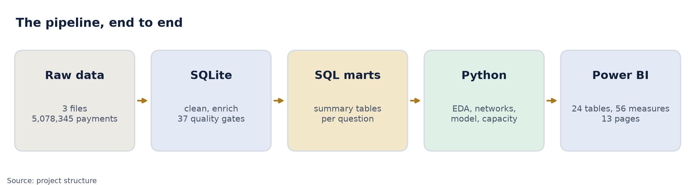
The raw files went into SQLite, where I cleaned and enriched them. From there I built marts: small summary tables that each answer one business question, such as "what is the laundering rate per channel, per hour?". Python did the analysis and the model. Power BI turned it into a 13-page story.
Three defects that would have broken everything silently
None of these threw an error. All three would have produced wrong answers that looked right.
- Two columns called "Account". The sender's account and the receiver's account share the same header. A naive reader merges them. I renamed them
from_account_idandto_account_idon load. - Bank IDs padded differently. The transaction file writes bank 10 as both "010" and "0010"; the account file writes "10". The join between payments and banks matched nothing, and 58 banks were split into two. I normalised every ID into one canonical key: 30,528 raw spellings became 30,470 real banks.
- A labelled tail. The last eight days (11 to 18 September) hold only 1,108 payments, and 655 of them are laundering: 59%, against 0.1% everywhere else. That is not a normal day. I kept these rows in whole-period counts but excluded them from the model and from time-of-day charts.
To make sure nothing like this slipped through again, I wrote 37 data-quality gates. Each one has an expected value written down in advance: row counts survive every step, labels total 5,177, every bank key resolves, every mart reconciles back to the source. If a single gate fails, the pipeline stops. All 37 pass.
What the data says
One channel carries almost the whole problem
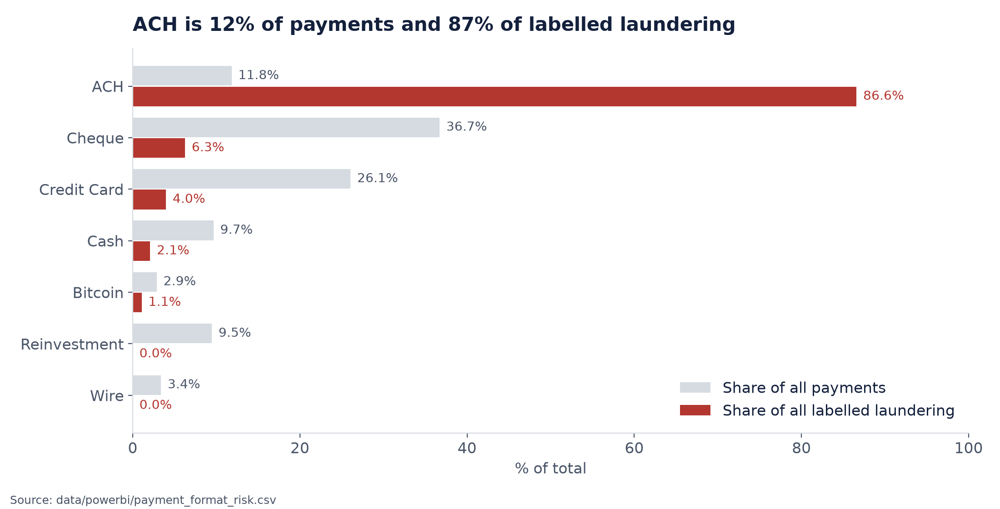
This was the biggest finding of the project. ACH (automated bank transfers) is 11.83% of all payments but holds 86.59% of the labelled laundering. Its labelled rate is 0.7462%, about 7 times the portfolio average. Cheque, the busiest channel at 37% of volume, carries just 6%.
A quick note on two numbers that sound alike but answer different questions. A share tells you how much of the whole problem sits here (86.59%). A rate tells you how risky each payment in this channel is (0.7462%). You need both.
Inside ACH, the time of day matters
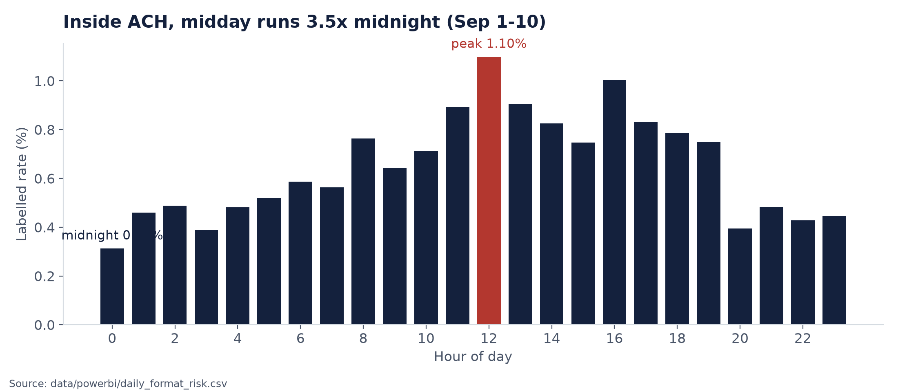
Within ACH, the labelled rate around midday is about 3.5 times the rate at midnight (1 to 10 September only, because the labelled tail is all ACH and would distort exactly these hours).
Crossing a border triples the rate
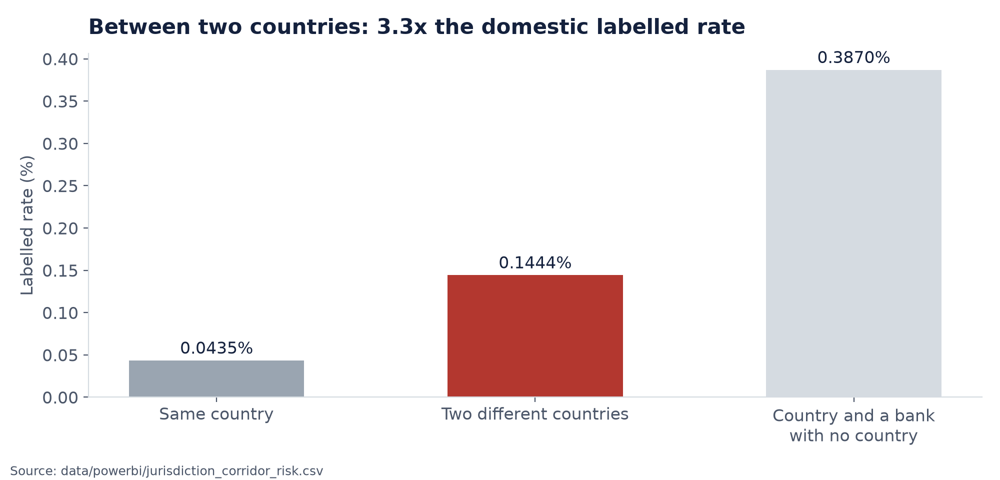
I read each bank's country from its name ("Portugal Bank #4507" means Portugal). Payments between two different real countries are labelled at 0.1444%, against 0.0435% within one country: 3.3 times higher.
One subtlety I had to correct mid-project: about a third of banks have no country in their name. My first version treated those as domestic, which inflated the cross-border multiple. Now that flag has three values (cross-border, domestic, and unclassified), and the unclassified group is shown on its own.
Where almost nothing happens
Just as useful as "where to look" is "where you can look less". Wire, Reinvestment and self-transfers make up 15.01% of all payments and carry only 11 labelled cases between them. Wire and Reinvestment alone: 652,911 payments, zero labelled.
Launderers work in networks
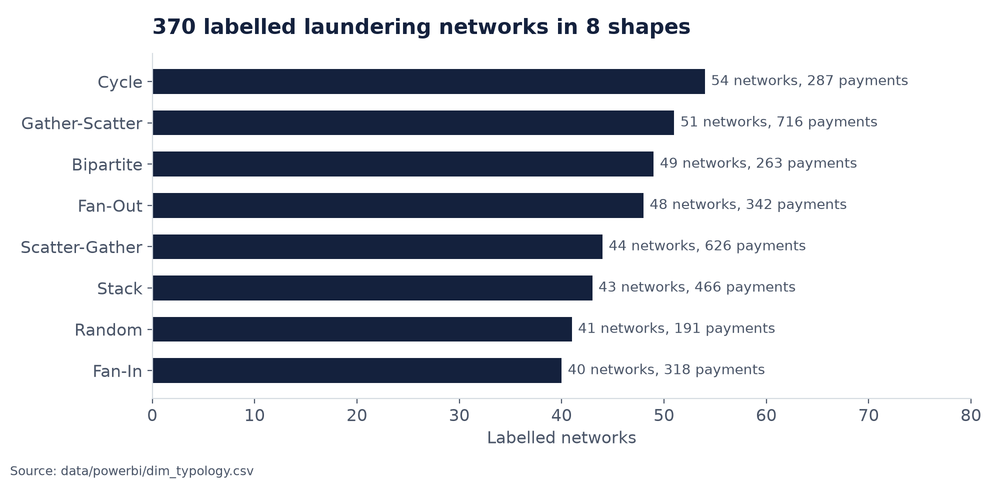
Using networkx, I rebuilt each of the 370 labelled networks as a graph. Depending on its shape, a network spans 5 to 16 accounts on average, and 99 of them contain a closed loop, where money travels around and comes back to where it started. These networks cover 3,209 payments, 61.99% of all labels. The lesson for an investigator: review the network, not just the single payment.
Before the model: build something to beat
"The model found 509 cases" means nothing on its own. 70 marks sounds great until you learn the class average was 90. So before training anything, I built three simple ways to pick 1,500 alerts (500 a day over the 3 test days):
- Random review: pick blindly. On average this finds 1,500 × 0.1111% = 1.7 cases. It is the floor.
- Account rule: a textbook AML checklist. Eleven red flags per account (money passes straight through, pays 20+ people, bursts of 5+ payments an hour, amounts just under the US $10,000 reporting limit, and so on), up to 16 points.
- Expert rule: a transparent points system built from my own findings, using only the first seven days as evidence. ACH +4 (40 times riskier in training), business sender +2, different jurisdictions +2, different bank +1, large amount for its currency +2, Wire or Reinvestment −6, paying yourself −4.
The textbook account rule found zero. Not "few". Zero, below random. The reason taught me more than the result: big institutional accounts pay thousands of people all day, so they trip almost every red flag. Ranking payments by their sender's account score fills the entire review budget with one bank's routine traffic before reaching a single suspicious payment.
A checklist copied without testing it against your own data can be worse than no rules at all.
The expert rule, built from the data in front of me, found 13. That is the honest baseline the model has to beat.
Teaching the model
The model's job is simple to describe: look at old payments marked "laundering" or "normal", learn the pattern, then give every new payment a risk score. The team opens the highest scores first.
Study days and exam days
I split the data by date, not at random. The model learns from 1 to 7 September and is tested on 8 to 10 September, three complete days it has never seen: 1,345,565 payments, 1,495 of them labelled.
Think of it as studying old questions and then sitting an exam with new ones. A random split would be like seeing the exam paper in advance: the model would learn from the future and the score would be fake. A bank works the same way: it learns from yesterday and scores today.
23 inputs, and only the past
Every payment is described by 23 inputs in four groups:
- The payment itself (5): channel, payment currency, receiving currency, hour of day, and the log of the amount.
- Warning-sign flags (5): cross-currency, self-transfer, between two banks, a US Dollar payment just under 10,000, a round amount with no cents.
- Who is involved (4): sending and receiving country, sender and receiver entity type (Corporation, Partnership, and so on).
- Behaviour history (9): how many payments the sender made before, how many different people they paid, what share of their past payments were ACH, their busiest hour; how many payments the receiver got, from how many people, and how much of what came in they passed straight on.
The history inputs follow one strict rule: only payments before this one count. For a payment at 2 pm on 5 September, the sender's history is built from everything up to 2 pm on 5 September and nothing after. That holds for training and test alike, because when a real payment arrives, the bank does not know the future.
Laundering is rare, so I rebalanced the study material
Imagine 1,000 photos with one cat in them. A model that answers "no cat" every time is 99.9% right and never finds the cat. To give the model enough examples, I kept every laundering payment from the training week but only 1 in 50 normal ones, which lifts the training share of laundering from about 1 in 1,000 to about 4 in 100.
Two consequences I kept track of. I did not also add class weights, which would correct the imbalance twice. And the output is now a ranking score, not a calibrated probability, which is fine, because the team only needs the order.
Two models
A logistic regression as a simple yardstick, and a gradient-boosting model (scikit-learn's HistGradientBoostingClassifier): many small decision trees, each one correcting the mistakes of the ones before. Gradient boosting can catch combinations, like "ACH plus a business sender plus a large amount". I used standard settings (learning rate 0.08, 31 leaves, up to 300 trees with early stopping) and did no hyperparameter tuning, so the result is not a lucky search.
Choosing the right yardstick
This is the part I would most like other beginners to take away.
Accuracy is useless here. A model that says "everything is normal" scores 99.89% accuracy on the test days and catches nothing.
ROC-AUC flatters. My model scores 0.977 on ROC-AUC, which looks almost perfect. Yet over its first 1,500 alerts, two thirds are false alarms. ROC divides false alarms by the number of normal payments, and with 1.34 million normal payments, 991 false alarms look like 0.07%. The metric simply does not see the wasted work.
PR-AUC tells the truth. The precision-recall curve asks, all the way down the ranked list: of the alerts opened so far, how many are real (precision), and how much of the laundering have we found (recall)? True negatives do not appear in either formula, so the mass of easy, obviously normal payments cannot inflate it. A random list scores the laundering rate itself, 0.0011.
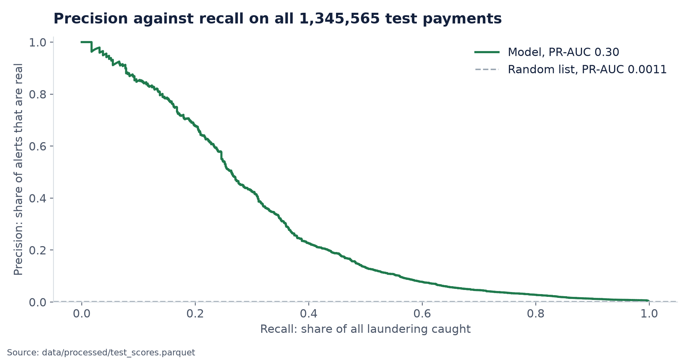
Gradient boosting scores a PR-AUC of 0.2982. The logistic yardstick scores 0.0261. For the operational view I also track precision in the top-k alerts, which is what the team actually feels.
The result
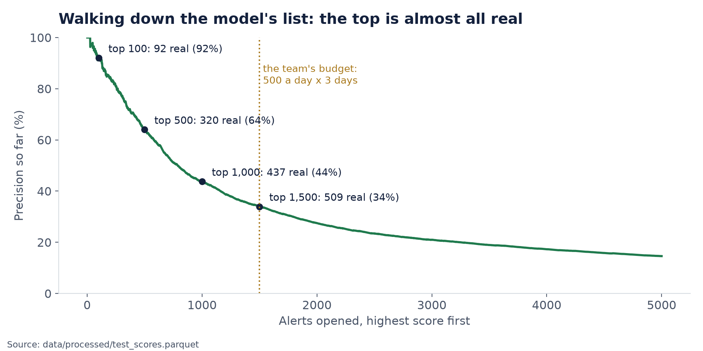
Walk down the model's list from the top and the first alerts are almost all real: 92 of the top 100, a lift of 828 times over random. Precision falls as you go deeper, which is exactly what a good ranking should do: 320 of the top 500, 437 of the top 1,000, and 509 of the top 1,500.
Every one of those 509 is an ACH payment. The model rediscovered the biggest finding of the analysis on its own.
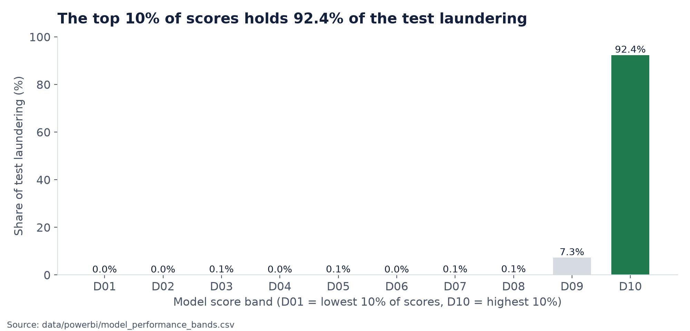
Four times the numbers tried to fool me
1. The trimmed exam
My first evaluation trimmed the test set the same way as the training set: every laundering payment, plus a slice of normal ones. It is a common shortcut, because it makes evaluation fast. It also inflates the score.
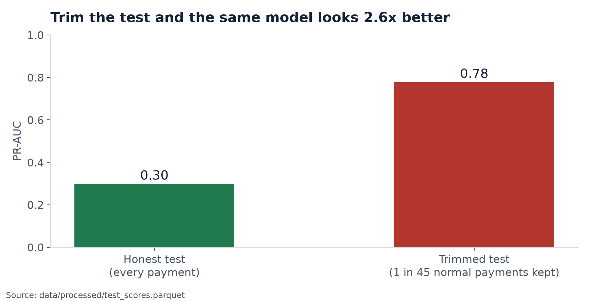
On the trimmed test the same scores read 0.78. On the real test, every payment at its true rate, they read 0.30. A bank cannot trim its normal payments, so the exam must not either. Since then, the test set is never sampled.
2. The leak that made the model worse, not better
In my first version, the training rows' history inputs were built from the whole training week, including the payment itself and later ones, while the test rows only saw the past. Training and test inputs meant different things. When I made every input strictly point-in-time, the PR-AUC jumped from 0.11 to 0.30 and top-100 precision from 59% to 92%.
A jump that size demands proof that nothing is leaking. So I ran three checks:
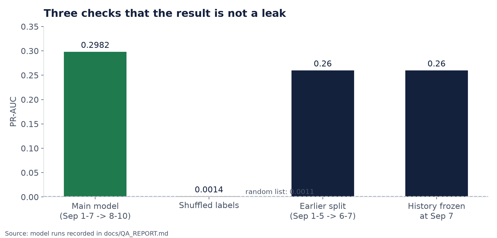
- Shuffle the answers and train again: PR-AUC 0.0014, the same as guessing. Nothing in the inputs secretly carries the label.
- Different dates (learn 1 to 5 September, test 6 to 7): PR-AUC 0.26, top-100 precision 89%. Not one window's luck.
- Freeze the test history at 7 September: still 0.26. The gain comes from consistent inputs, not from test-period history.
3. The tie-breaker
Rule queues give many payments the same score, so the order among ties matters. My first version broke ties by amount, which in a 15-currency book puts Rupee and Ruble payments first simply because their numbers are bigger. I switched to first-in, first-out (the earlier payment first, the way a real team works a queue) and, at the same time, made the rule take its evidence from the training week only. Together those two fixes took the expert rule from 38 cases to 13. The old number was partly an artefact of ordering.
4. The lucky draw
An early random baseline reported 3 cases. That was one lucky draw: picking 1,500 payments at random can give anywhere from 0 to 5 by chance. The fair baseline is the expected value, 1.7.
What it is worth: same team, 39 times more
Scores mean little to a bank manager. Cases caught and hours spent do. Every queue gets the same budget: 500 alerts a day for 3 days, so 1,500 alerts.
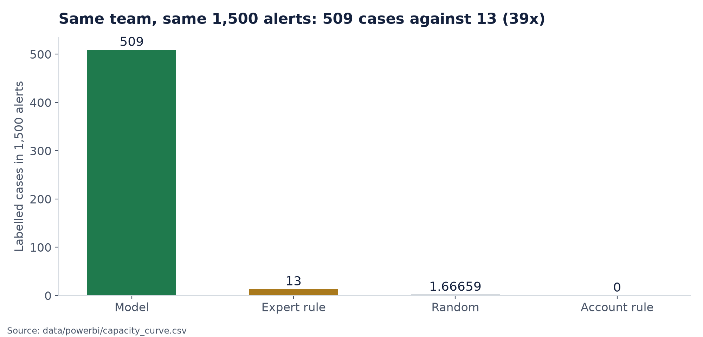
Now the time. I assumed 20 minutes to review one alert and 6 productive hours per analyst per day. Then 500 alerts a day need about 28 analysts, and 1,500 alerts cost 500 analyst hours, whichever queue you use. The difference is what those hours buy.
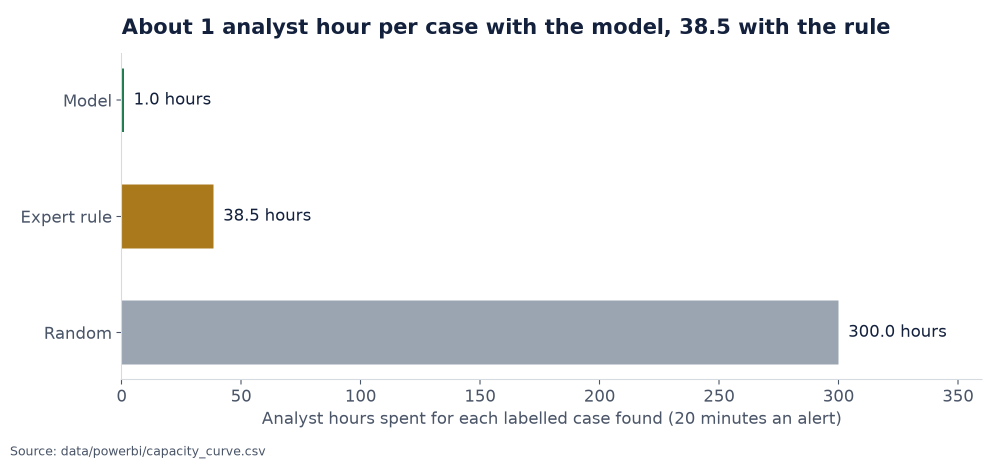
- Model: 500 ÷ 509 = about 1 hour per case
- Expert rule: 500 ÷ 13 = 38.5 hours per case
- Random: 500 ÷ 1.7 = 300 hours per case
The 20-minute figure is an assumption, not a measurement. But it applies to every queue equally, so if reviews really take 30 minutes, every number grows by half and the 39-times gap stays exactly the same.
Why the model flags what it flags
A bank cannot act on a black box, and a regulator will ask why a payment was flagged. So I measured permutation importance: shuffle one input on the full test set and see how far the PR-AUC falls. The bigger the fall, the more the model relies on it.
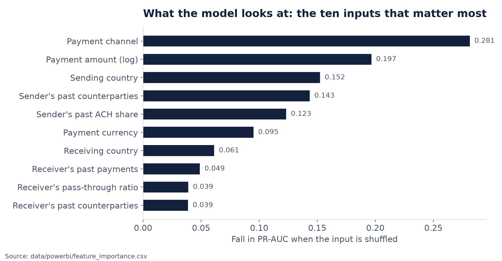
Payment channel, amount, sending country, the sender's past number of counterparties and the sender's past ACH share lead the list. That is reassuring: the model is learning the patterns the exploration found, not a trick.
The dashboard
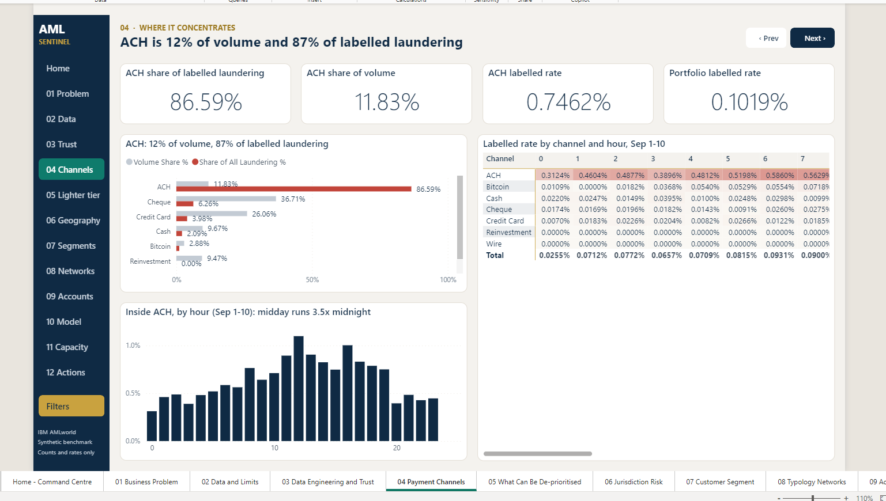
The Power BI report has a Home page and 12 story pages, one per slide of the talk, each headed by the claim it proves. Underneath sit 24 tables (5 lookup tables at the centre of a star schema, 12 feed tables linked to them through 20 relationships, and 7 standalone results tables) and 56 DAX measures.
Two rules held across every measure:
- Rates are always re-divided from counts (
DIVIDE(labelled, transactions)), never an average of stored percentages. Averaging rates would weight a 12-payment corridor the same as a 300,000-payment one. - No amount ever crosses a currency. Cost is analyst time.
The report is stored as a Power BI Project (PBIP), so the model and every page are plain text files. Pages, measures and model columns are generated by scripts, which means a changed number is a re-run, not an afternoon of clicking through 500 visuals.
What this project does not claim
I would rather say these before anyone asks:
- The data is synthetic. Nothing here transfers to a live portfolio without validation, explainability review and human oversight.
- 92% is the top 100 only. Across all 1,500 alerts precision is 34%, and at this capacity about two thirds of the labelled laundering is still missed.
- The staffing figures are assumptions, stated in the code and printed on every run.
- The rules are baselines, not tuned competitors. Tuning them would turn them into small models.
- Untried: XGBoost, LightGBM and hyperparameter tuning. A trailing-window version of the history inputs is the next improvement.
Three actions
- Route ACH to its own queue, business senders first: 11.8% of volume, 86.6% of labelled cases.
- Move Wire, Reinvestment and self-transfers to a lighter tier: 15.01% of volume, 11 labelled cases. Watch the cases found there, and move them back if that number rises.
- Rank the review queue with the model: 509 labelled cases in 1,500 alerts, against 13 for the best rule, at about 1 analyst hour per case instead of 38.5.
What I learned
- The metric comes from the problem, not the model. A team works a ranked list from the top, so ranking metrics; laundering is rare, so PR-AUC over ROC-AUC; capacity is fixed, so precision in the top k.
- Build the baseline first. Without the expert rule, "509" would have been a number with nothing to stand against.
- The dangerous bugs do not crash. A broken join, a trimmed test set and a leaky feature all produced plausible numbers. Expected values written down in advance, and a pipeline that stops when they are not met, caught them.
- A big improvement needs more proof, not less. The jump from 0.11 to 0.30 was the moment to go looking for a leak.
The question I started with was "which 0.1% would you open first?". The answer, at least on this data, is: the ACH payments the model ranks highest. With the same people and the same hours, that finds 39 times what the best simple rule finds.
Built with SQLite, Python (pandas, scikit-learn, networkx) and Power BI, on IBM's AMLworld HI-Small dataset. All figures in this post are drawn from the project's own outputs.